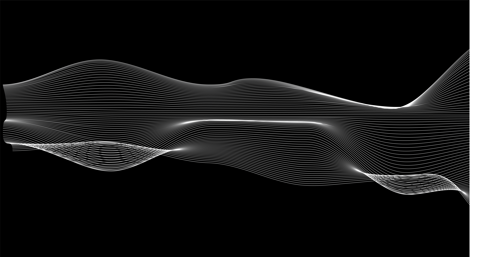
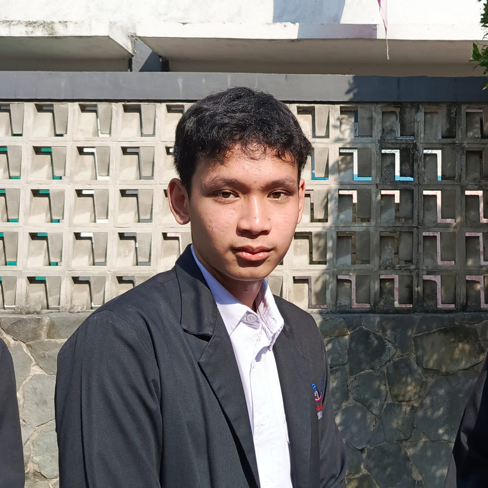

DESIGN
Beberapa Design yang telah saya buat


PORTOFOLIO


Hi there!
Hai! Saya Muhammad Asyqar Dahlan, mahasiswa Sistem Informasi yang memiliki ketertarikan mendalam pada perpaduan antara teknologi dan desain. Saya selalu antusias mengeksplorasi bagaimana arsitektur sistem yang efisien dapat berjalan selaras dengan UI yang intuitif. Saya percaya bahwa menciptakan solusi digital yang berdampak adalah sebuah perjalanan eksplorasi yang tak pernah berakhir.
Dalam sebuah kehidupan memang ilmu adalah hal yang terpenting dalam hidup kita, dan inilah latar belakang pendidikan saya
Pengalaman dapat membuat saya mempelajari dan memahami sesuatu yang saya lakukan, ini adalah beberapa pengalaman yang pernah saya lakukan
Beberapa Design yang telah saya buat